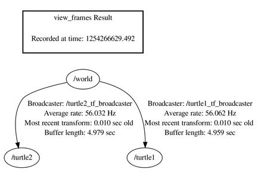
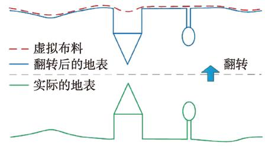
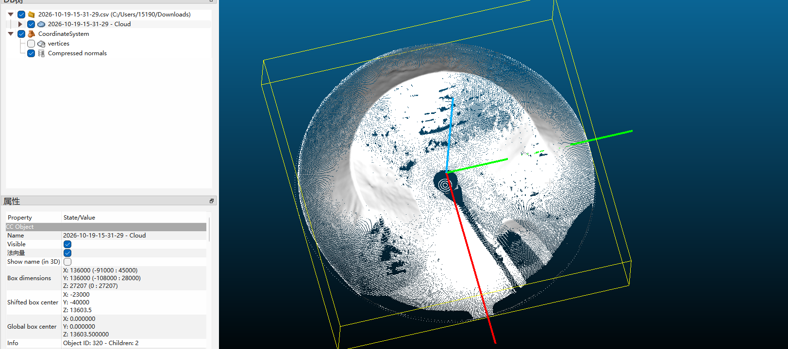

激光雷达点云相关问题
什么是TF树？
TF 树是 ROS / ROS2 里用来管理一堆坐标系之间位姿变换的有根树；每个节点 = 一个坐标系，每条边 =「父 → 子」的带时间戳的空间变换（平移 + 旋转）

什么是Deskew?什么是Motion Compensation?
-
Motion Compensation 运动补偿
-
Deskew 去畸变，抗扭斜
激光雷达不是一瞬间拍完一帧；在扫描这一帧的过程里，雷达本身（底盘 / 云台）一直在旋转、平移。如果直接用这一帧结束时刻的位姿去把所有点转到世界坐标系，点云会被 “拉歪、拖成斜的”。Deskew 就是：给帧里每一个点，按它自己独立的采样时间戳，回推到它被发射、被接收那个瞬间雷达当时的姿态，再做坐标变换。
Δθ= \underbrace{(t_{pt}−t_{ch})}_{秒}× \underbrace{ω}_{度/秒}这个问题并不只出现在用云台线扫的激光雷达里，本质上是雷达在生成这一帧的点的过程中雷达的世界位姿发生了变化。
Delaunay三角化
Delaunay 是人名：Борис Николаевич Делоне（Boris Delaunay，鲍里斯・德洛内，俄裔数学家），中文常叫「德洛内三角剖分」
这个把点拼成三角形的过程，叫「三角剖分 /triangulation」
**核心规则：空圆性质（二维）**给定一堆平面散点，做三角剖分，如果满足：
每一个三角形的外接圆里面，严格不包含其他任何输入点，这就是 Delaunay 三角化。
另有一条这样的推论：
在所有可行三角划分里面，Delaunay 最大化所有三角形里面最小的那个内角。也就是它天生讨厌又扁又细的 “刀片三角”，尽量生成圆润、规整的三角形。
推广到3D，不再是三角形，而是三棱柱，即四面体，因此3维下的Delaunay剖分即每个四面体的外接球内部不含别的采样点。
因此在用点云来建模物体表面的时候，一般都先对点云做3D Delaunay，然后把里面那些属于内部的四面体删掉，只留表面的三角形。
CSF是什么？
Cloth Simulation Filter，布料模拟滤波
专门用来把地形点云分成地面点和非地面点（车辆，建筑，障碍物什么的）

至于原理就如图所示吧，非常直观了
那么遇到凹形的场地又要咋办呢？比如这种：

它出来的岂不就是个凹形了吗？